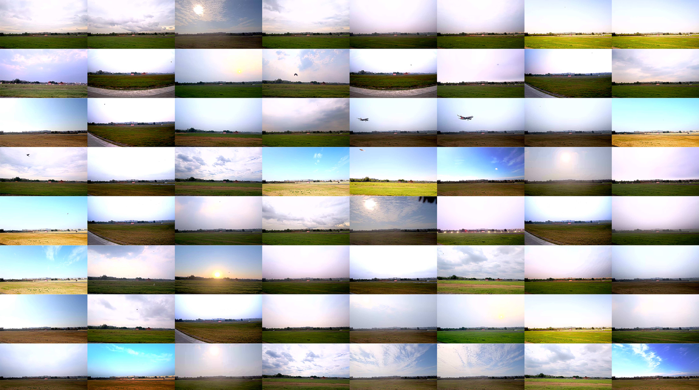

Introduction
One fundamental limitation to the research of bird strike prevention is the lack of a large-scale dataset taken directly from real-world airports. Existing relevant datasets are either small in size or not dedicated for this purpose. To advance the research and practical solutions for bird strike prevention, we present a large-scale challenging dataset AirBirds that consists of 118,312 time-series images, where a total of 409,967 bounding boxes of flying birds are manually, carefully annotated. The average size of all annotated instances is smaller than 10 pixels in 1920x1080 images. Images in the dataset are captured over 4 seasons of a whole year by a network of cameras deployed at a real-world airport, covering diverse bird species, lighting conditions and weather scenarios. To the best of our knowledge, it is the first large-scale image dataset that collects flying birds in real-world airports for bird strike prevention. Since the detection module is a crucial component of the strike prevention system, we also investigate the performances of existing representative detectors on AirBirds. The results show that their performances are surprisingly unsatisfactory and the reasons are analyzed in detail. Due to special data distribution, AirBirds can also serve as a challenging benchmark for tiny object detection.
In addition, we develop a vision-based system to detect flying birds in a real-world airport. The above video demonstrates this case. Subsequent measures of bird repelling are triggered automatically once targets are discovered in the specified areas.
Download
The totoal size of all compressed files in AirBirds is about 165GB, it is necessary to split the dataset into multiple chunks, as the following table summarizes. The training set includes images0.zip, ..., images9.zip and corresponding labels0.zip, ..., labels9.zip, remaining images10.zip and images11.zip are in the test set. The dataset instructions and download links can be found HERE. Please fill [the form](https://forms.gle/BCydUZpQMm9ZQQMR9) to get the extraction code of our dataset.
| Chunk | Images | Labels | Size | Chunk | Images | Labels | Size |
|---|---|---|---|---|---|---|---|
| 0 | images0.zip | labels0.zip | 13GB | 1 | images1.zip | labels1.zip | 13GB |
| 2 | images2.zip | labels2.zip | 13GB | 3 | images3.zip | labels3.zip | 12GB |
| 4 | images4.zip | labels4.zip | 14GB | 5 | images5.zip | labels5.zip | 13GB |
| 6 | images6.zip | labels6.zip | 14GB | 7 | images7.zip | labels7.zip | 16GB |
| 8 | images8.zip | labels8.zip | 21GB | 9 | images9.zip | labels9.zip | 11GB |
| 10 | images10.zip | --------- | 16GB | 11 | images11.zip | --------- | 15GB |
Gallery
To provide you an intuitive impression of AirBirds, a gallery that consists of 64 random samples is presented. Samples exhibited here are only a small portion of 118,312 images and we hope they open a window of exploring this challenging and scenario-diverse dataset for the research of bird strike prevention.

Citation
If you use our dataset or find our dataset is helpful for your research and project, please cite our paper as follows
@InProceedings{Sun_2022_ACCV,
author = {Sun, Hongyu and Wang, Yongcai and Cai, Xudong and Wang, Peng and Huang, Zhe and Li,
Deying and Shao, Yu and Wang, Shuo},
title = {AirBirds: A Large-scale Challenging Dataset for Bird Strike Prevention in Real-world Airports},
booktitle = {Proceedings of the Asian Conference on Computer Vision (ACCV)},
month = {December},
year = {2022},
pages = {2440-2456}
}
License
AirBirds is for non-commercial research and educational use only. Researchers can share and adapt this dataset under the license Creative Commons Attribution-NonCommercial-ShareAlike 4.0 International (CC BY-NC-SA 4.0).